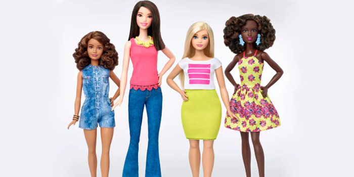

15 - 芭比娃娃
Barbie

1959年，第一个芭比娃娃在美国“出生”了！她的创造者是Ruth Handler。当时的玩具娃娃看起来都是刚出生的孩子，Ruth在想，为什么不做一个看起来是“大人”的娃娃呢？这样孩子们在玩的时候就能“看到”长大以后的自己了。这让玩具变得更有意思了。Ruth和Mattel合作，设计出了第一个芭比娃娃。她穿着黑白条纹泳装，她的头发很好看。很多人很喜欢这个“大人”芭比娃娃。
芭比娃娃的发展过程也很有意思。60年代，Mattel为芭比设计了各种各样的衣服，还有太阳眼镜、围巾、帽子等等。孩子们可以根据自己的想法给芭比穿不同的衣服。70年代，芭比开始“工作”了，她是医生，她是空姐，还可以是篮球运动员、糕点师等等。芭比娃娃用自己的“职业”告诉孩子们，你们长大以后也可以像我一样哦！80年代，人们开心地看到芭比娃娃有不同肤色，1997年还有坐轮椅的芭比，所有的这些设计都在告诉人们：包容与平等。2016年，芭比娃娃有各种不同的身材，有高的，有矮的，胖的瘦的……她们虽然身材不同，但都在自信地笑着。芭比告诉我们，美可以有很多种。
六十多年来，芭比娃娃一直在变化，但她一直站在时代的前方。你还记得以前陪你长大的那个芭比娃娃吗？